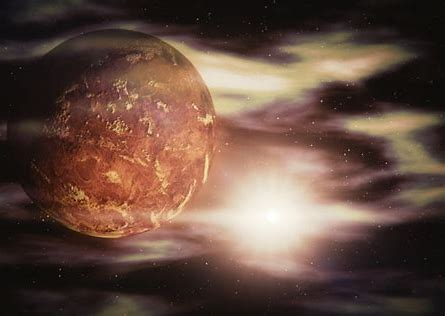
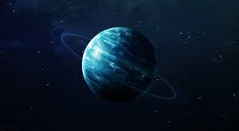

Головна
Головна
Земля

Сонце

Меркурій

Венера

Земля

Місяць

Марс

Юпітер

Сатурн

Уран

Нептун

Плутон

Наша унікальна планета розміщена на відстані 149,5 млн км від Сонця. Понад 70 % земної поверхні вкрито водою, яка завдяки температурному режиму нашої планети може перебувати в трьох агрегатних станах - твердому, рідкому та газоподібному. Водяна пара затримується в атмосфері Землі, що робить її особливо яскравою серед планет Сонячної системи.
Навколо нашої планети є атмосфера, що складається переважно з кисню, азоту та вуглекислого газу. Атмосфера захищає життя на Землі від шкідливої сонячної радіації. У ній згаряє більшість метеоритів до того, як вони досягають поверхні Землі.
Досить складно зазирнути всередину нашої планети, адже навіть найглибші шахти мають глибину 10 км. Проте вчені знайшли інший спосіб. Записуючи коливання земної поверхні, що відбуваються під час землетрусів, вони встановили, що надра нашої планети складаються переважно з трьох основних частин - кори, оболонки (мантії) та ядра . Вік найстаріших порід земної кори перевищує 4,5 млрд років. Температури, тиск та густина речовини збільшуються з глибиною. Температура ядра, яке складається зі сплаву заліза та нікелю, досягає 10 000С (це більше, ніж у зовнішніх шарів Сонця).

Земля обертається навколо Сонця по елептичній орбіті. Найближче наша планета підходить до Сонця в січні, а на найбільшу відстань відходить у липні. Один повний оберт навколо Сонця Земля здійснює за 365,25 доби, тобто за один рік. Кожний четвертий рік ми підсумовуємо ці дробові частини і одаємо один день до лютого, називаючи цей рік високосним.
Земля - єдина планета Сонячної системи, на якій існує життя.
Характеристики Землі